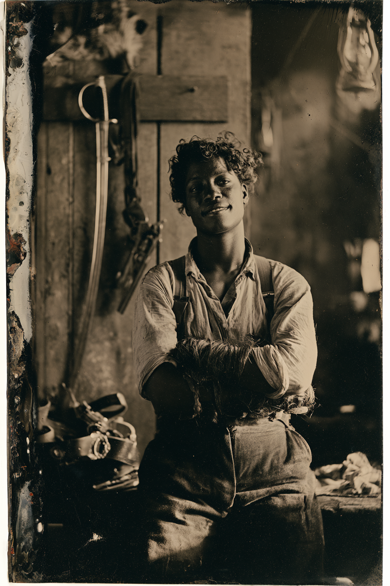

Archetyp: WARRIOR (Krieger)
Ausdrücklich die nicht-indigene Krieger-Option: eine schwarze Frau aus Missouri, die sich als Mann bei der 10. US-Kavallerie verpflichtete — angelehnt an den dokumentierten Fall von Cathay Williams, die 1866–68 als „William Cathay“ diente. Deadlands’ langer Bürgerkrieg macht das leichter zu begründen, nicht schwerer (Grundbuch S. 12 weitet die Rollen von Frauen ausdrücklich aus).
Zwei Fäuste, ein Säbel, vierhundert Dollar auf ihren Kopf — und ein Bruder, den sie in einer Senke vor Fort Concho stehen ließ.
| Agility | d8 | 2 |
| Smarts | d4 | 0 |
| Spirit | d6 | 1 |
| Strength | d6 | 1 |
| Vigor | d6 | 1 |
| Skill | Attr. | Die | Pts. |
|---|---|---|---|
| Fighting | Agi | d10 | 5 |
| Athletics | Agi | d6 | 1 |
| Riding | Agi | d6 | 2 |
| Shooting | Agi | d4 | 1 |
| Intimidation | Spi | d4 | 1 |
| Persuasion | Spi | d6 | 1 |
| Survival | Sma | d4 | 1 |
Hintergrund. Als Eigentum bei Boonville geboren, mit elf freigelassen, mit vierzehn hungrig. Sie verpflichtete sich 1878 in den Jefferson Barracks als „Gefreiter Del Cobb“, leistete den Eid der 10. neben ihrem älteren Bruder Isaiah und lernte das Boxen bei den Regimentsabenden in Fort Concho, wo sie sehr gut war und sehr leise das beste Geld der Kompanie. ’82 verkaufte ein Quartiermeisterfeldwebel Munition im Wert von drei Troopern an einen „Prospektionstrupp“ aus dem Pecos-Land; die Patrouille, die den Trupp suchen sollte, kam nicht zurück. Del fand sie. Sie standen noch. Sie meldete es, bekam gesagt, sie solle den Mund halten und das Hemd zugeknöpft lassen, und ritt in derselben Nacht davon, ohne abzuwarten, für welchen der beiden Befehle sie sie hängen würden.
Build. Geschicklichkeit W8, Verstand W4, Geist W6, Stärke W6, Konstitution W6 · Parade 7, Robustheit 5 Kämpfen W10, Athletik W6, Reiten W6, Schießen W4, Einschüchtern W4, Überreden W6, Überleben W4 Talente: Two-Fisted (Beidhändiger Kampf), Ambidextrous, Martial Artist (Kampfkünstler)
Ambidextrous ist hier nicht optional: Beidhändiger Kampf hebt den −2-Abzug der schwachen Hand ausdrücklich nicht auf (SWADE S. 44). Mit allen dreien wirft sie zwei St+W4-Schläge pro Runde bei Kämpfen W10+1 — ohne Mehrfachhandlung und ohne Abzug für die schwache Hand. Das ist eine wirklich gemeine Novizen-Maschine.
Handicaps: Wanted (Gesucht, schwer) — Major: Fahnenflucht; das Grundbuch ist deutlich, dass Verhaftung „einen langen Fall an einem kurzen Strick“ bedeutet · Loyal — Minor · Illiterate (Analphabet) — Minor Ausrüstung: Colt Peacemaker .45, Gürtel und Halfter, Kavalleriesäbel (St+W6) mit abgefeilter Regimentsnummer am Korb, Bowiemesser, Pferd, gestohlener McClellan-Sattel, Satteltaschen, Schlafrolle, Feldflasche, Proviant. Rosshaar-Handwickel, die sie vor jedem Kampf neu wickelt, ob es einen geben wird oder nicht.
Aufhänger. Isaiah war einer der Trooper, die in dieser Senke noch standen. Sie hatte einen geladenen Karabiner und benutzte ihn nicht, und sie ist seither jedes Frühjahr zu dieser Senke zurückgeritten, um zu sehen, ob er noch da ist. Er ist da. Er hat sich nicht bewegt. Der Feldwebel, der die Munition verkaufte, ist Hauptmann geworden und irgendwo im Gebiet der Kampagne stationiert — und er weiß genau, was Del bezeugen kann, weshalb die Belohnung immer weiter steigt. (Schlimmster Albtraum: ihren eigenen Verpflichtungsnamen beim Appell aufgerufen zu hören.)
Warum es Spaß macht. Zwei Angriffe pro Runde bei der Erschaffung, von einer Frau ohne Waffe in den Händen. Sie ist außerdem die lauteste, komischste, geldgierigste Stimme in einer Posse voller grimmiger — bis jemand die 10. erwähnt.
Regelgrundlage: Regelnotizen · Archetyp-Notizen